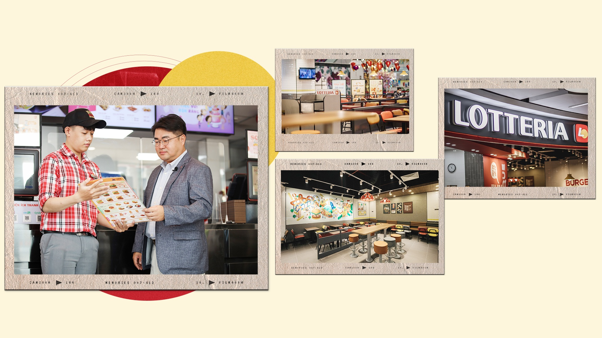
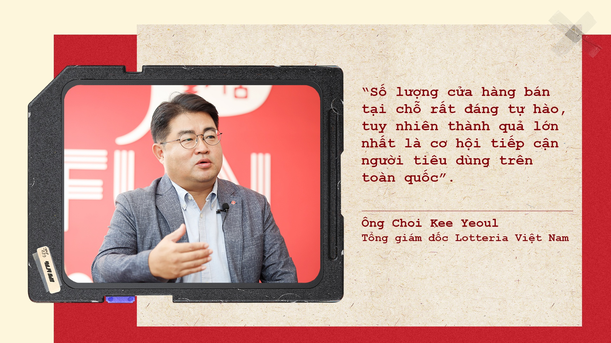

Lotteria là chuỗi nhà hàng thức ăn nhanh trực thuộc tập đoàn Lotte – một trong năm tập đoàn lớn nhất Hàn Quốc. Suốt 7 năm liền đứng vị trí số 1 về “Brand Power”, được cấp bởi “ Korea Management Association”, và được chọn là vị trí số 1 về năng lực cạnh tranh thương hiệu với danh hiệu “Brand Stock” của cơ quan đánh giá giá trị thương hiệu.
Trong suốt thời gian qua, Lotteria đã nỗ lực không ngừng để cung cấp cho khách hàng các dịch vụ chu đáo, ân cần và không ngừng nghiên cứu để phát triển nền văn hóa ẩm thực tốt cho sức khoẻ. Hơn nữa, để đảm bảo vệ sinh, an toàn thực phẩm và bảo vệ môi trường, Lotteria tự hào đạt được các chứng nhận quốc tế như:
- An toàn thực phẩm (RVA HACCP)
- Vệ sinh môi trường (ISO 14001)
- Chất lượng sản phẩm
(ISO 9001)

Lotteria có mặt tại thị trường Việt Nam từ năm 1998. Hiện nay, mang tầm vóc của doanh nghiệp quốc tế, Lotteria đang dẫn đầu ngành công nghiệp ăn uống quốc nội với hơn 210 nhà hàng tại hơn 30 tỉnh/thành trên cả nước. Đây là kết quả của những nỗ lực không ngừng mà Lotteria đạt được.
